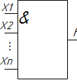

Булевы операции
Инверсия
Инверсия – это логическое отрицание. Операция «НЕ».
Имеет следующий вид : F=X ̅ (F= НЕ Х) (F=инверсия от Х).
В данной схеме только один вход.
Х- вход, F – выход.
Имеет следующий вид : F=X ̅ (F= НЕ Х) (F=инверсия от Х).
Инверсия принимает значение единицы, если аргумент равен нулю.
Инверсия принимает значение нуля, если аргумент равен единице.
По данному определению составляем таблицу истинности и чертим логическую схему.
Инверсия принимает значение нуля, если аргумент равен единице.
Таблица 1 - Истинность и тд прочее
| X | F |
| 0 | 1 |
| 1 | 0 |
0 - обозначает инверсию х - вход один f - выход один
